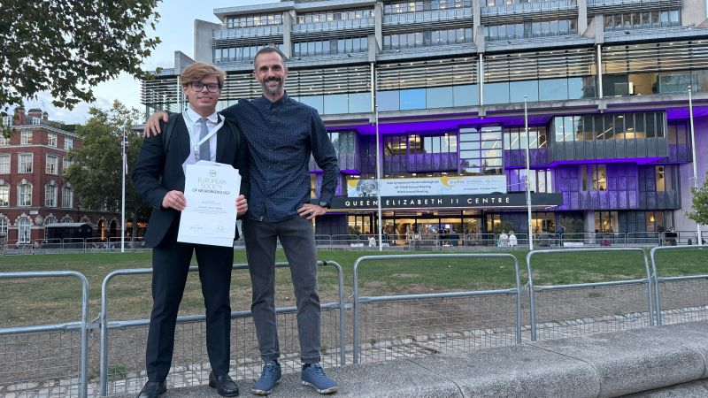
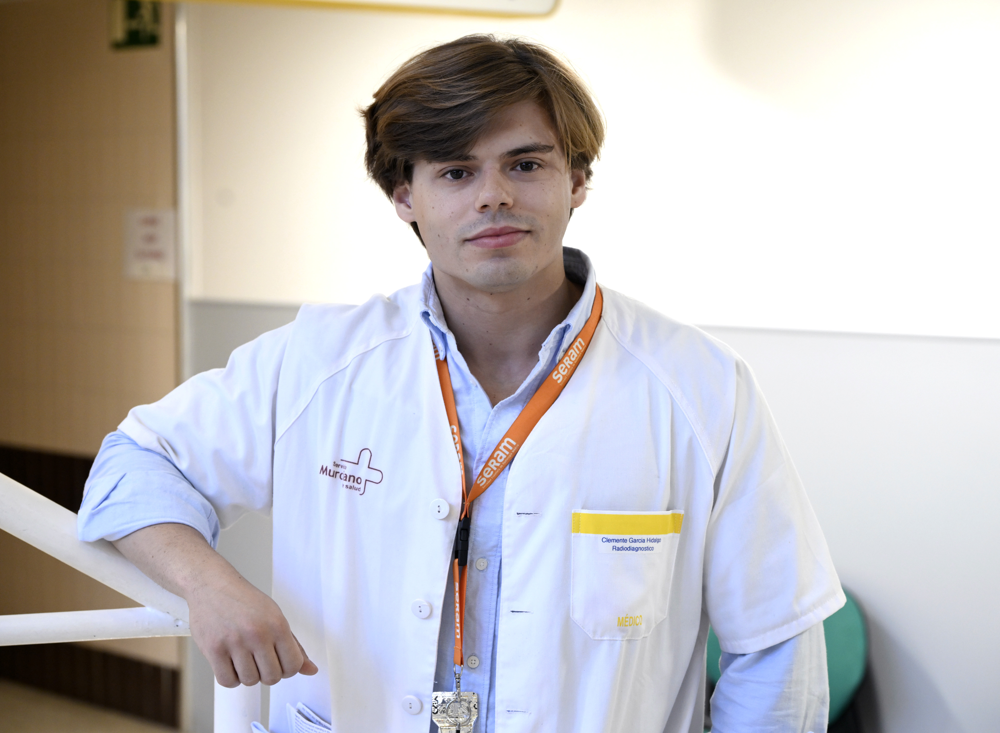
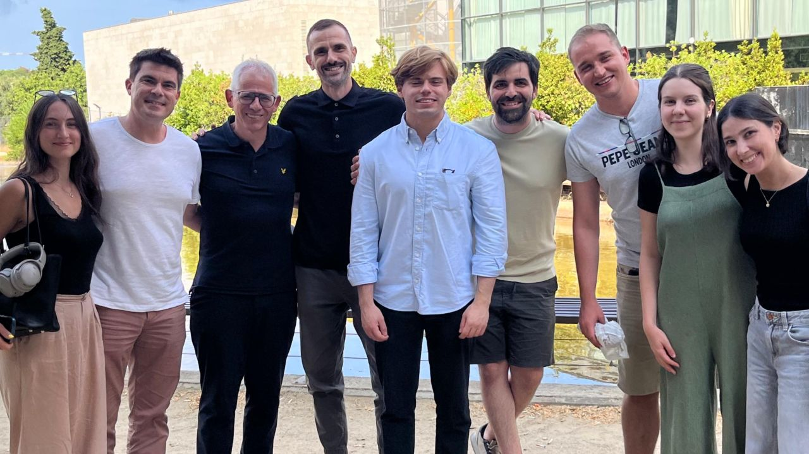

MD, MSc · PhD candidate
Clemente
Radiology, Medical Imaging and AI
Radiology resident at Hospital Morales Meseguer, Murcia.
26 Journal publications
18 First-author works Including sole authorship
8 Sole-author works

After the ESNR award ceremony, London, 2026. From my LinkedIn. Recognition · London
The youngest recipient and the second from Spain, following my mentor, Dr Albert Pons-Escoda. A shared achievement with the Bellvitge team, and one I am deeply grateful for.
La Vanguardia / El Llobregat · 1 November 2026

Photograph: Colegio de Médicos de la Región de Murcia Interview · Colegio de Médicos de Murcia
An interview about my radiology training and doctoral research, following the second prize in the college's clinical case competition.
Colegio de Médicos de la Región de Murcia · 18 May 2026
IABiomed · visual de-identification of medical images · 2026
Bracco–EuSoMII AI Contest · ECR 2026
Shared research recognition · SERAM 2026
European Society of Emergency Radiology · 2025 & 2024
Coauthor of the awarded European Radiology study · 2024
AI ethics and regulation · CESM Murcia / DEPFIM · 2024

With the Bellvitge research team. 2017 — now
The journey From medical school in Murcia to doctoral research at Bellvitge: the people, places and shared milestones along the way.
Explore my journey →
Research fields
Quantitative MRI Neuro-oncology Radiomics Medical AI Biostatistics Research software
My work connects quantitative MRI and neuro-oncology with radiomics, medical AI, biostatistics and research software.
Quantitative neuroimaging · 2026
European Journal of Radiology · First author
Radiomics & analytical validity · 2026
European Radiology · First author
Synthetic data & privacy · 2026
Journal of Imaging Informatics in Medicine · Sole author
Medical AI & psychometrics · 2026
JMIR Medical Education · First author